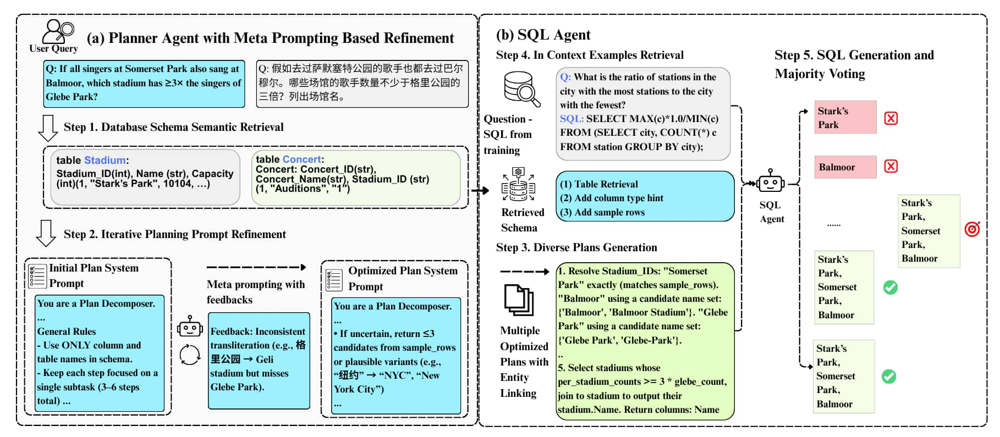
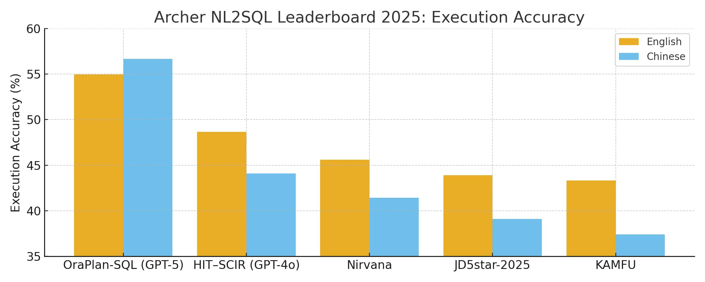

Overview
A hypothetical can change which records belong in a calculation. OraPlan-SQL makes that change explicit in a plan, then uses the plan to write and run SQL. We developed it for reasoning questions asked in English and Chinese.
How the planner handles the premise
A direct translation can count Balmoor’s existing singers and overlook the word “also.” The planner first says what changes in the imagined world. It adds Somerset Park’s singers to Balmoor’s lineup, removes duplicate singer–stadium pairs, and only then compares each venue with Glebe Park.
A Chinese question adds another decision. The venue name in the question has to match an English value in the database. A one-letter error is enough to lose the row. In another example from the paper, a translation produces “John Nisinik” while the table contains “John Nizinik.” Giving the planner the original wording and candidate database values lets it check the match before the SQL agent writes its filter.
During development, we turned recurring errors into instructions for the planner. For a new question, the system tries several plans and votes on the results returned by their SQL. Different queries can agree on the same venues. In the paper’s full example, the selected answer contains Stark’s Park, Somerset Park, and Balmoor.


Bilingual results on Archer
OraPlan-SQL placed first on the 2025 Archer Challenge. Execution accuracy measures how often a generated query returns the expected result. The English and Chinese scores below are from the held-out challenge test set.
- English
- 54.96%
- Chinese
- 56.67%


On the separate English development set, the full system scored 72.12%. Removing the planner reduced that to 64.42%. See the planner comparison in Table 2.